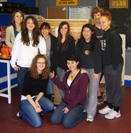
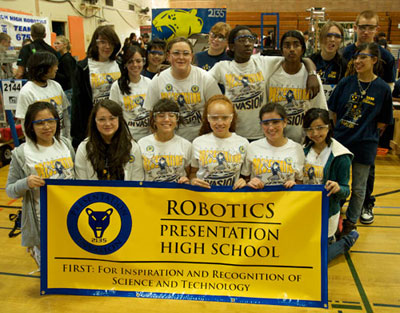
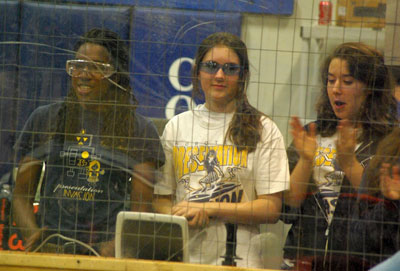

Presentation Invasion - Team 2135
Our Mission
The young women of the Presentation Invasion Team 2135 have come together with our various talents, ideas, and backgrounds to take on the 2011 FIRST Robotics challenge. We will be respectful to each other and to the other teams we meet. We promise to try our best at all times and succeed in the completion of our goals.
"This is not just a team, it is a family."
History
Presentation High School first became interested in robotics in 2006. Two sophomores, Elaine Higashi and Arille Jeriza Virrey, had developed a strong interest in robotics and wanted to learn more about the field and its mechanics. After approaching Principal Ms. Mary Miller and Dr. Howe of the Mathematics and Science Academy at Presentation, the two girls were given two VEX robot kits. With great enthusiasm, Elaine and Arille gathered a few other interested friends and began assembling the robots. Within a short period of time, they had completed the project and showed it to Ms. Miller and Dr. Howe. Both were so impressed in the girls' voluntary commitment in building the robots that it was agreed a club would be formed. For the rest of 2006, about 12 girls worked on more VEX kits after school for fun.

In 2007, the robotics club expanded and joined the FIRST Robotics Competition. By this time, the club had transformed into a team consisting of 15 students all of which were dedicated to building a robot. Within the first year of entering the competition, the students' knowledge and skills grew a tremendous amount, considering they did not have any experience in previous years. The students were able to quickly comprehend the mechanics of building a robot and the various fields involved in creating it.Of course, Team 2135 ran into various obstacles along the way, such as a tight budget, safety of the students, and so forth. Teachers were concerned about students' safety in building the robot, especially since it had to be done in the school's hallways. Presentation's Robotics Team did not have a dedicated working area and many power tools, but they were able to overcome the obstacles and still be successful during the competition. During that year, Team 2135 competed in the Silicon Valley Regional and Davis Regional. In the Silicon Valley Regional, they received the Highest Rookie Seed Team Award and the team's website was given the Website Excellence Award. Once the 2007 season ended, Presentation High School purchased a house now known as Jenvey House, an area specifically for The Robotics Team.
After ending the 2007 season on a good note, the team was prepared to make more changes for the 2008 season. With leader Arille Virrey (Class of 2008), now at Santa Clara University, and leader Elaine Higashi (Class of 2008), now at Cornell University, and many dedicated mentors from prestigious universities like Santa Clara University, the team's knowledge expanded exponentially. Their skills were put to the test when the software had to be recoded about five weeks into the build cycle. Now, the team had to start a new software program with the Silicon Valley Regional rapidly approaching. However, the team was able to successfully leap over this barrier and make it to the Silicon Valley Regional with their robot performing at optimum levels.

The 2009 season was led by Erin Simpson (class of 2009), who is now at University of Washington. During the 2009 season, the team had expanded to include twenty-six eager and bright-eyed members. The team made it to CalGames with great enthusiasm, and despite their anxiety and inexperience, was able to place an impressive 12th out of 36 teams.
At Silicon Valley Regionals, their efforts were shown when they were placed 16th out of 49 competing (and more experienced!) teams. In alliance selection, they were chosen to be a part of the 8th seated alliance.
2010 has proven to be a difficult year. Led by Sarah Watanabe (Class of 2010), now at Fordham University, the team overcame the many obstacles involved with building a more complex robot than previous years.

In the fall season of 2010, led by Mary Gatesy (class of 2011), Team 2135 competed at the Madera High School Robotics Competition on November 13. This season's game was called �gBreakaway." The Presentation Robotics Team was qualified as a part of the semi-finalist round and placed 9th out of 20. It was a close game with the team only one win away from becoming finalists. It was a fantastic way to end the 2010 season with an even better start in 2011.